如何用 AI 更高效地学习：一对一 AI 教学系统的设计与实战
本书整理自 Eero Alvar 的视频《我是怎么用 AI 学东西的》（中文配音版，B 站 BV1cSbi62Eu5）， 将口语分享重构为书面化技术指南。文中视频卡片可直接跳转回原片对应时刻。
引言：AI 是优化学习的完美工具吗？
(参考时间: 00:00)
我们能不能用 AI 学得更好？总该有某种用 AI 优化学习的办法——AI 看起来正是做这件事的完美工具，只是"具体怎么做"还不清楚。本视频（及本书）分享作者目前的一套完整做法：
- 先讲清这套方法背后的思路与设计：传统学习方式的结构性低效在哪里，理想形态是什么；
- 再做一次实时演示：用搭建好的 AI 智能体系统，从零开始学习"微分形式"这一真实的数学主题，走完一个完整的学习循环。
1. 传统学习的结构性低效：多对多关系
(参考时间: 00:23)
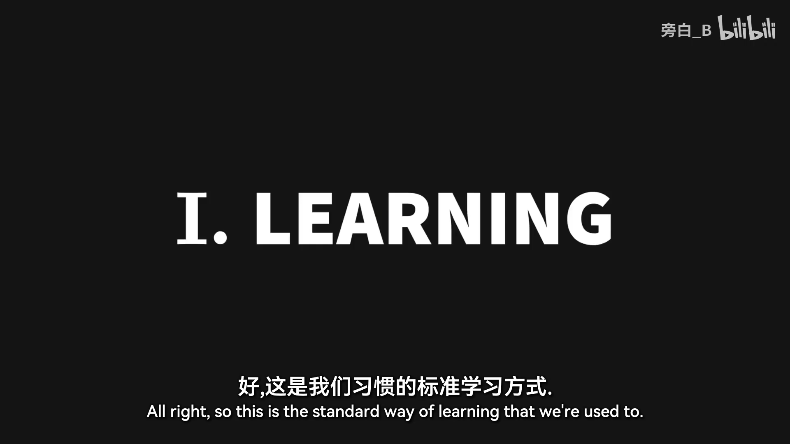
📷 标准学习方式：教学渠道与学习者之间的多对多关系
在 B 站中打开 (00:00:26)
我们习惯的标准学习方式是一个多对多的结构：
- 每个教学渠道——一位老师、一本书、一门课，不管是什么——都是为教很多学生而设计的；
- 同时，每个学生也从很多教学渠道学习。
学习者和教学渠道之间的这种多对多关系，在两个方向上各自产生不同形式的低效。
1.1 一对多：为众人设计的教学不可能对任何一个人最优
(参考时间: 00:46)
第一个低效来自"一个教学渠道教很多人"：为很多人设计的教学渠道，不可能对其中任何一个人是最优的。
所谓"最优教学"完全取决于学习者当前的理解状态，这包括两层含义：
- 整条教学弧线：从学习者当前理解到目标理解之间的完整路径；
- 过程中的每一个解释：路径上每一步的讲法。
一条最优的教学路径应当：
- 尽量少教学习者已经掌握的东西；
- 尽量少教他们还无法理解的东西；
- 因此它应该恰好作用在学习者理解的边界上。
graph LR
A[当前理解] -->|"已掌握的内容<br/>（不必重复教）"| A
A --> B["理解边界<br/>（最优教学作用点）"]
B --> C["超出边界的内容<br/>（暂时无法理解，不该教）"]
B -->|"每一步恰好推进边界"| D[目标理解]
所以理想情况下，一个老师应该只有一个学生。
1.2 多对一：适应多个渠道消耗心智，更深的代价是信任
(参考时间: 01:29)
第二个低效来自"一个学生从很多教学渠道学习"。这意味着学习者要不断适应：
- 很多教学风格；
- 很多符号体系；
- 很多可靠性水平；
- 很多界面。
在它们之间切换所消耗的心智努力，没有投入到学习材料本身。
但作者认为这里还有一个更深的代价：信任。面对不熟悉的教学渠道，大脑会有所保留——在这个渠道证明自己足够熟悉之前，大脑不会完全投入地去接受一个事实。
一个恰当的例子：假设我们想理解毛球定理（hairy ball theorem），手头有两份一模一样的解释，一份来自 3Blue1Brown 的视频，另一份来自 X（推特）上某个路人。即使解释完全相同，我们显然会从熟悉的来源那里学得更好——当大脑信任这个教学渠道时，它会更容易内化信息。
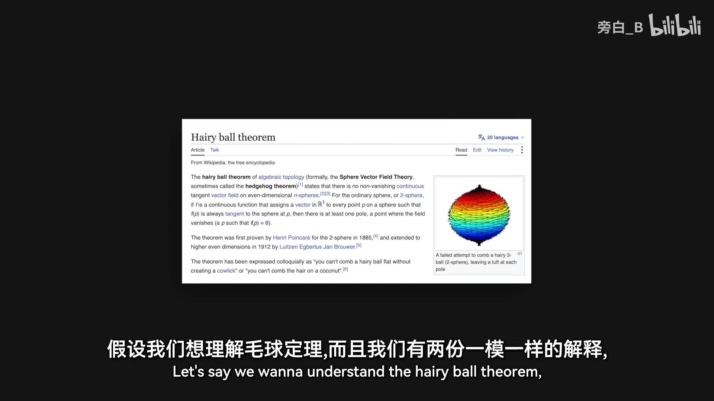
📷 毛球定理的例子：同样的解释，熟悉的来源学得更好
在 B 站中打开 (00:02:12)
所以理想情况下，一个学生应该只有一位老师。
2. 理想形态：双向一对一
(参考时间: 02:41)
综合上面两个方向，理想场景是双向的一对一：一个老师只教一个学生，一个学生只跟一位老师。
2.1 反驳"单一视角"：接口 ≠ 来源
对这个理想形态有一个明显的反对意见：只有一位老师，岂不是只能获得一种视角？
作者认为这个反对意见把"来源"和"接口"混为一谈了。一位老师并不会减少来源和视角的数量——相反，他会把所有来源和视角汇总起来，通过一个统一的接口来传递。我们不会失去多种视角，失去的只是多个互不相通的界面。
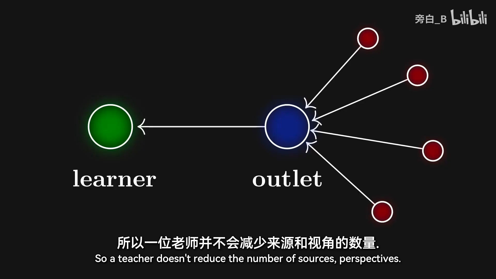
📷 一个接口适配一个大脑，覆盖所有来源
在 B 站中打开 (00:03:02)
2.2 AI 老师的信任是"被设计出来的"
在 AI 作为老师的情况下，信任不是随着时间慢慢建立的，而是被设计进系统里的。系统必须内建可靠的验证与事实核查机制，原因有二：
- 正确性：我们绝对不希望 AI 产生幻觉、给出虚假信息；
- 学习效率：当我们知道系统是可靠的，学习会变得更容易——大脑无需保留，可以放心内化。
一句话总结这个理想形态：一个接口，适配一个大脑，覆盖所有来源。
3. 系统的两条设计原则
(参考时间: 03:46)
前面讨论的两个低效之处，直接给出了系统运行所依赖的两个原则：
| 低效 | 对应原则 |
|---|---|
| 一对多：教学对个体不最优 | 原则一：优化教学 |
| 多对一：多渠道切换消耗心智与信任 | 原则二：优化脑力资源的分配 |
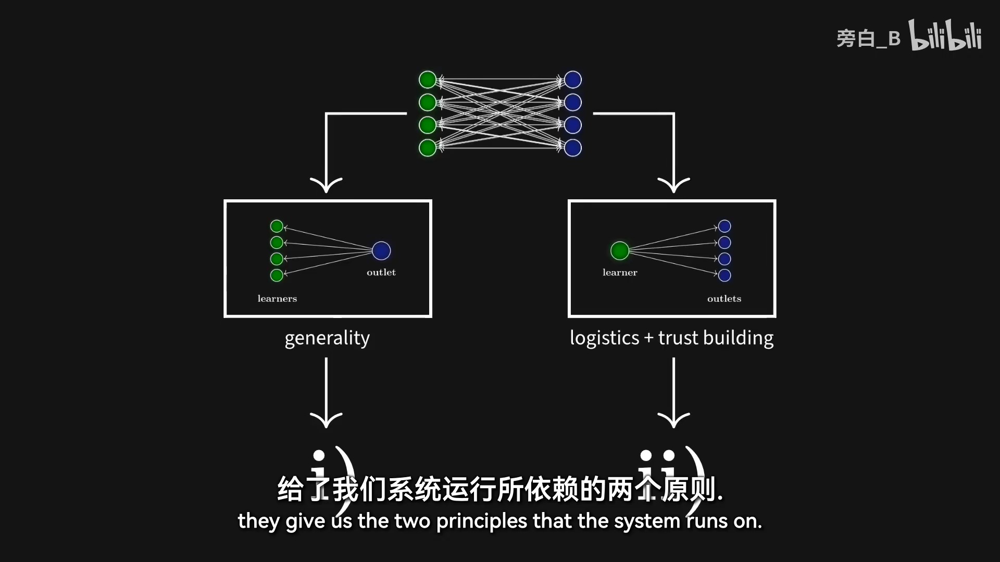
📷 两条设计原则：优化教学、优化脑力资源分配
在 B 站中打开 (00:03:52)
需要特别强调的是，原则二并不意味着消除困难。恰恰相反：
- 我们想要最大化挣扎——我们想学难的东西，挣扎非常重要；
- 但挣扎必须发生在材料本身，而不是后勤安排上。
做计划、找资源、核实事实、想清楚学什么、按什么顺序学——这些"后勤"全都由系统承担，让学习者把全部认知工作集中到材料本身。
4. 工作流程：探查 → 规划 → 教学
(参考时间: 04:29)
具体流程分为三个阶段：
graph TD
A["阶段一：探查<br/>分级单选题测验<br/>沿依赖线索二分搜索理解边界"] --> B["阶段二：规划<br/>推演完整教学路径<br/>派出子智能体做验证与事实核查<br/>输出 Mermaid 计划图"]
B --> C["阶段三：教学<br/>按个人学习理念定制<br/>沿依赖图逐个推理步骤推进<br/>定期测验反馈、保持校准"]
C -->|"反馈循环"| A
4.1 阶段一：探查（Probe）
要做到最优教学——不管"最优"因人而异差别多大——系统显然需要知道这个人当前确切的理解程度，所以它必须去测量。
系统通过一个测验工具完成测量：
- 出有分级的单选题；
- 先问非常宽泛的问题；
- 然后在课程会依赖的每一条可能线索上做二分搜索，找到理解边界。
最终得到一张学习者理解情况的非常详细的地图。
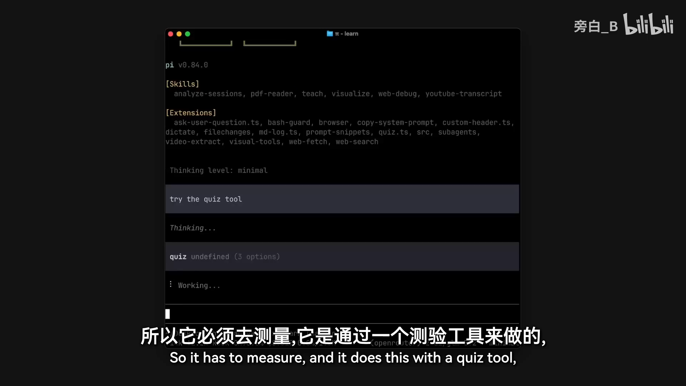
📷 探查阶段：用分级单选题测量理解边界
在 B 站中打开 (00:04:53)
4.2 阶段二：规划（Plan）
规划阶段基本上就是把一切都推演清楚："我怎么才能把这个具体的东西交给这个头脑？"
这个阶段有两件关键的事：
- 系统会派出第一批做验证和事实核查的子智能体；
- 把计划呈现为一张 Mermaid 图表（依赖图/示意图）。
展示计划图有两个理由：
- 其一，让学习者更清楚接下来要学什么；
- 其二——这才是真正实现它的原因——逼迫 AI 把一切都推演清楚，这样它就不能偷懒、不能即兴糊弄。
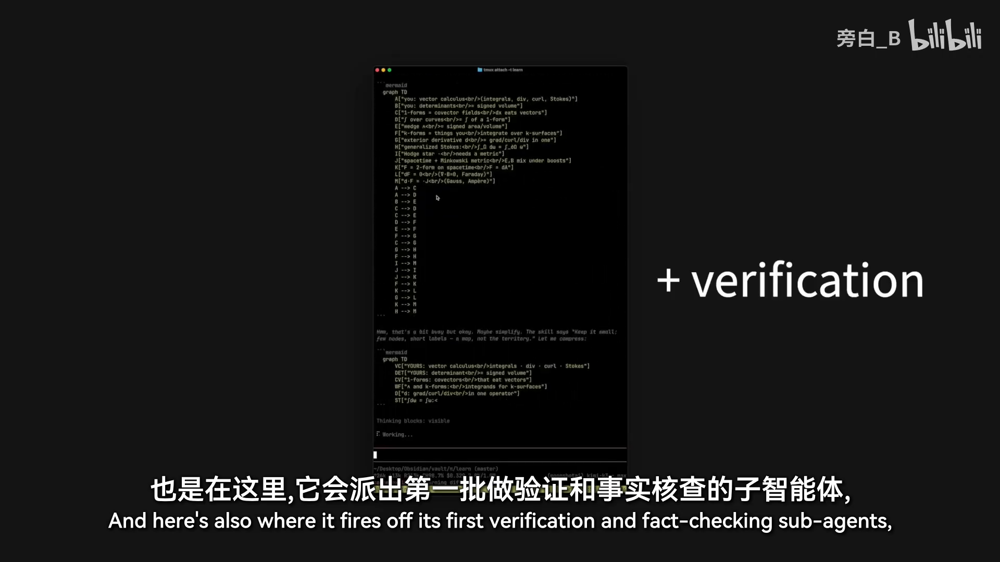
📷 规划阶段：呈现为 Mermaid 依赖图的学习计划
在 B 站中打开 (00:05:29)
4.3 阶段三：教学（Teach）与反馈
教学阶段会非常不一样，因为它完全取决于你想怎么学——你要把自己的学习理念、以及"怎么学效果最好"装进这个系统里。
但有一个细节，不管具体的学习方式是什么都很重要：反馈。AI 会定期考你，检查你是不是真的理解了。这很重要，有三个原因：
- 防自欺：人很容易在某种程度上自欺欺人、以为自己懂了——用 AI 学习时尤其如此，真正检验你的理解是对你自己很重要的反馈；
- 系统校准：系统需要持续反馈来保持校准（知道你的理解边界移动到哪里了）；
- 巩固理解：应用材料做练习题、使用你学到的东西，本身就是新信息和新理解得以巩固的一部分。
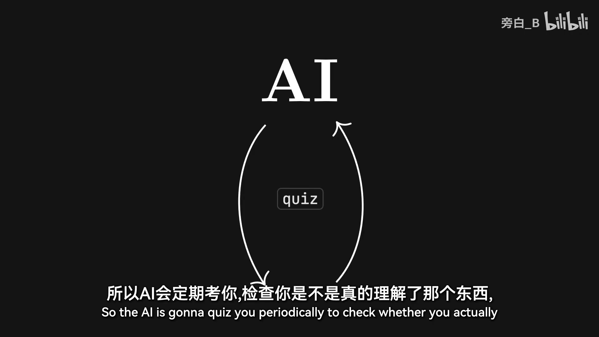
📷 教学阶段：AI 定期测验，三个理由
在 B 站中打开 (00:06:16)
5. 实时演示：从零学习微分形式
(参考时间: 06:51)
5.1 系统环境
演示在一个 pi 智能体框架中进行，作者的学习目录里预置了：
- teach 技能（教学技能，指令写得相当具体）；
- 一些可视化工具；
- 测验扩展；
- MD 日志扩展：把一个 Markdown 文件关联到会话上，所有输出都打印在这个文件里——配合 Obsidian 作为界面，能获得 LaTeX 渲染，且每次学习会话都留下持久化记录；
- 两个用来制作视觉材料的子智能体。
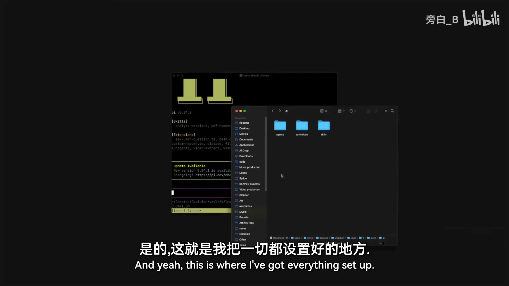
📷 pi 智能体框架的学习目录：技能、扩展与子智能体
在 B 站中打开 (00:07:04)
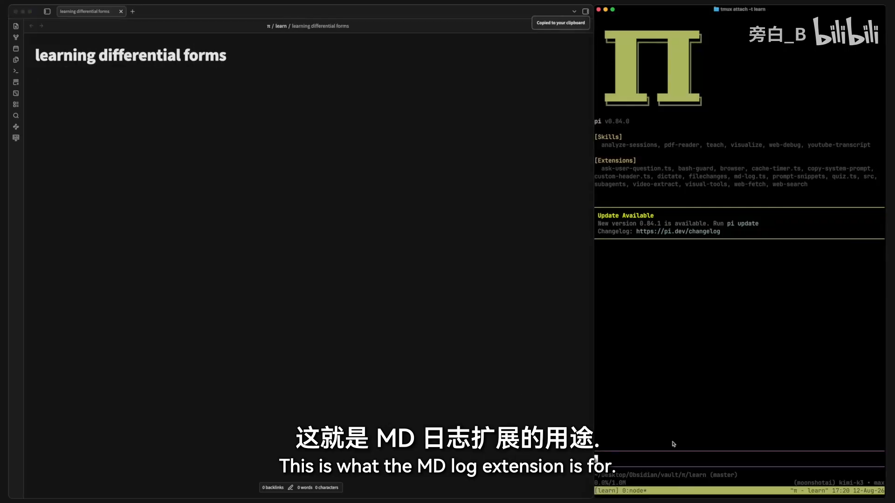
📷 Obsidian 作为统一界面：MD 日志扩展 + LaTeX 渲染
在 B 站中打开 (00:08:06)
演示这样一个系统的唯一方法，就是真的去学点东西、走完一个完整循环。作者选择的学习目标是微分形式（differential forms）：在他之前一个与学习相关的视频里提到过，麦克斯韦方程组用微分形式只需两个方程就能表达——而他对微分形式其实一窍不通，正好是一个真实的学习过程。
演示使用的模型是某顶级大模型的 Max 档——因为作者真心觉得，模型的智能程度对教学影响很大。
指令只有一句话：
教我，想对微分形式来一次扎实的入门学习。
5.2 探查阶段实录
这次作者故意给的背景信息非常少（不预先声明自己已经懂什么），所以会有一个很长的探查阶段。系统开始出分级单选题：
- 线积分：向量场 F 作用在一个沿曲线 C 运动的粒子上，这个线积分计算的是什么？（选项涉及保守场；对任意向量场 F，正确答案是"场对粒子做的功"。）
- 散度：向量场在某一点的散度，衡量的是该点每单位体积的径向外通量。
- 斯托克斯定理、法拉第电磁感应定律……
- 甚至一路问进了狭义相对论：当你换到一个运动参考系时，电场和磁场会发生什么？正确答案是——它们会混合：一个参考系中的纯电场，在另一个参考系中会同时具有电场部分和磁场部分。
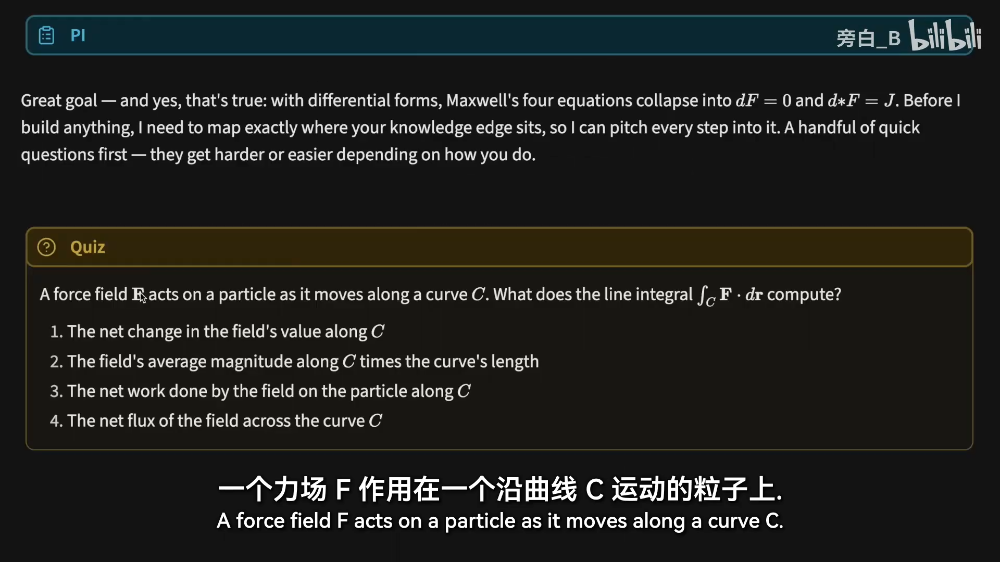
📷 探查实录：线积分的分级单选题
在 B 站中打开 (00:08:49)
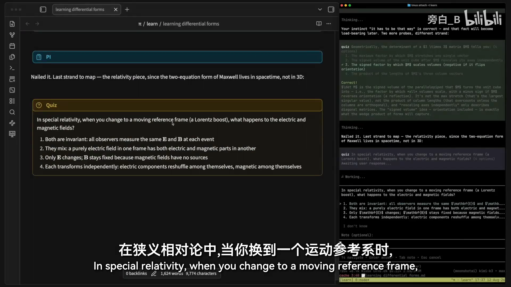
📷 探查实录：狭义相对论中 E 与 B 的混合
在 B 站中打开 (00:09:58)
探查阶段结束后，系统对学习者的理解程度已经有了一幅非常细致的图谱。作者的感受是：这本身也是个不错的热身——完全不用操心别的，只需要回答问题，所有流程安排系统都会处理。期间还有一个"研究员"子智能体在后台继续跑事实核查（数学通常不太需要事实核查，但这是个好习惯）。
5.3 规划阶段实录
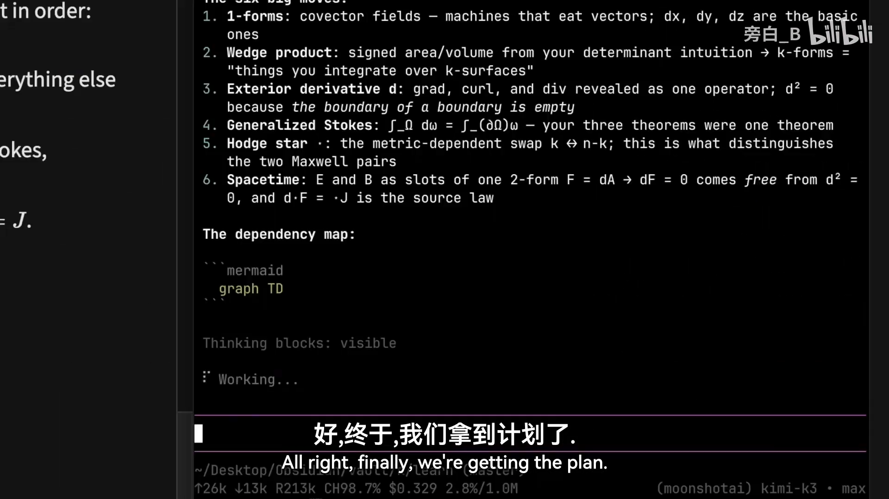
📷 规划实录：完整的学习计划依赖图
在 B 站中打开 (00:11:08)
系统给出了完整计划（Mermaid 依赖图，在 Obsidian 中渲染）。作者注意到一个有趣的安排：在到达真正目标（麦克斯韦方程组的微分形式表达）之前，会先接触到广义斯托克斯定理——依赖关系被完整推演了出来。
5.4 教学阶段实录
教学开始后，系统调用可视化技能生成 SVG 图示。值得注意的工程细节：
- SVG 生成放在子智能体里做（为了保留主会话上下文）；
- 子智能体会查看生成的图像，确认它看起来是否真的正确——写了一个 SVG 之后先查看、再稍微编辑、再看一遍，确认无误才交付。
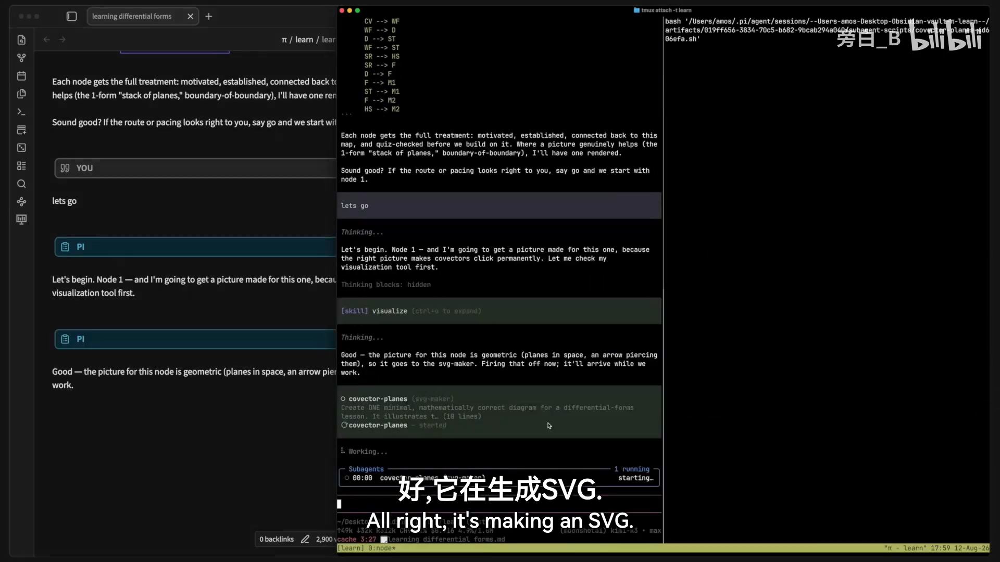
📷 教学实录：可视化子智能体生成并自查 SVG
在 B 站中打开 (00:11:42)
然后系统沿着规划好的依赖图，一次只推进一个推理步骤：
- 余向量（covector）：引入余向量，并给 dx 一个全新的视角；
- 立刻就这个推理步考一下学习者，确认内容真的被理解。例如：设 α = 3dx − 2dy，问 α 作用在向量 v 上等于多少？（答案：4。）可视化图示在这里帮了大忙；
- 余向量场：把余向量扩展成余向量场，于是"线积分到底是什么"有了新的视角；
- 1-形式：所有在一维对象上的积分，都是 1-形式的积分；
- k-形式：对 k-形式，就是在 k 维曲面上做积分的那种对象；
- 楔积（wedge product）：双线性、而且反对称的"机器"。要让一个不反对称的东西变反对称，最小修法就是老掉牙的那招——交替化（对交换的两个输入取差），这样就能得到反对称的东西。
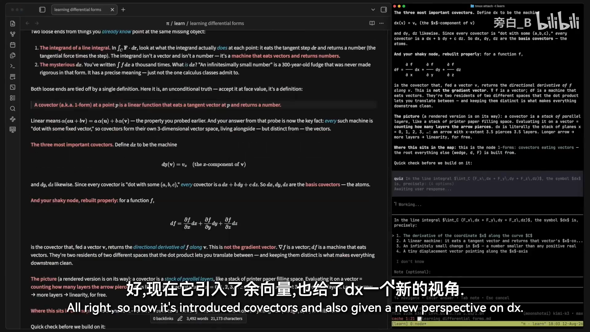
📷 教学实录：引入余向量，给 dx 一个新视角
在 B 站中打开 (00:12:34)
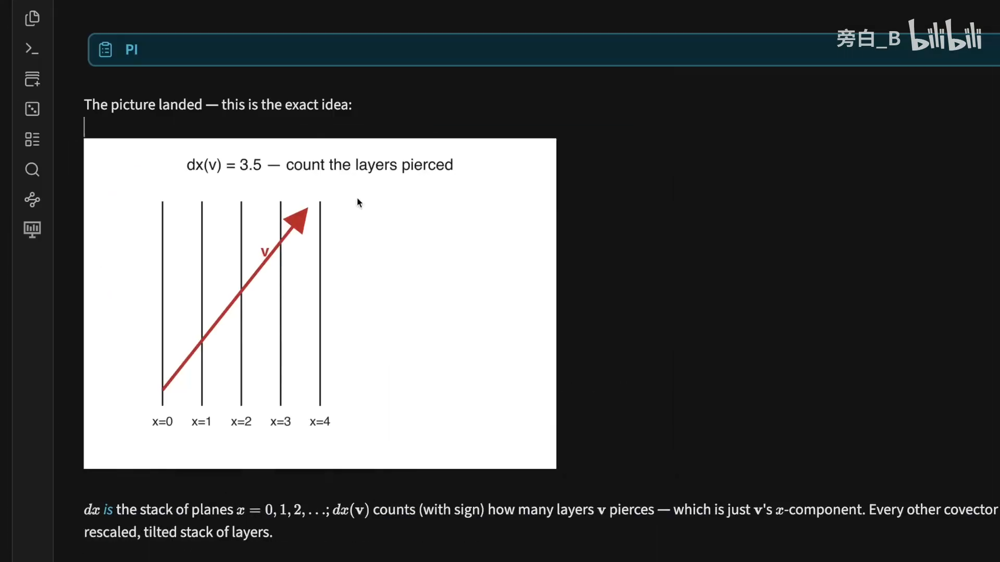
📷 教学实录：随堂测验——α = 3dx − 2dy 作用在 v 上
在 B 站中打开 (00:12:58)
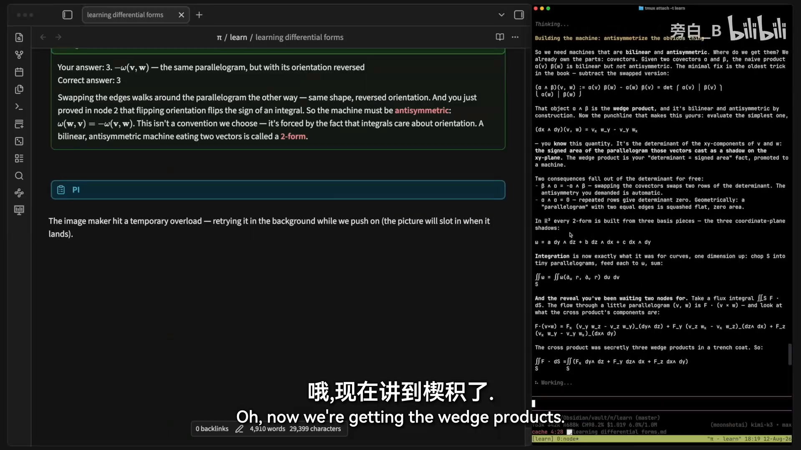
📷 教学实录：楔积——双线性且反对称的机器
在 B 站中打开 (00:14:52)
关于节奏，作者特别强调：通常和 ChatGPT 之类的模型聊天、让它解释或教你任何东西，它往往"太兴奋了"，一口气冲完整个内容。而他喜欢保持非常慢的节奏，一次一个推理步骤：
- 任何时候有问题都可以随时问，系统不会急着往前冲；
- 每一步都很容易消化——"他会给我所有我能照单全收的东西"。
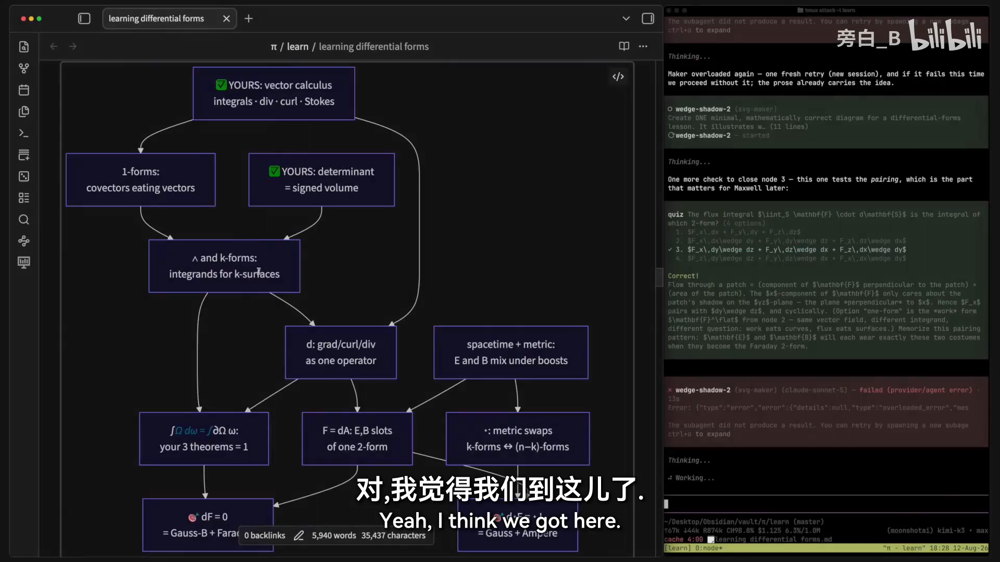
📷 教学实录：沿依赖图推进，接近广义斯托克斯定理
在 B 站中打开 (00:15:28)
演示进行到快接近广义斯托克斯定理时收尾——显然不打算在视频里把整个依赖图走完。
6. 总结：把学习理念落实成 AI 系统
(参考时间: 15:37)
这个视频真正在讲的是：怎么把一种学习理念或教学方式，落实成一个 AI 系统。
作者坦言，这套系统对他如此有效，主要原因并不是视频中讲的这些结构性内容，而是他上一个视频里讲过的那种教学风格。教学风格恰好影响两件事：
- 学习路径——从当前理解走向目标理解要走的路；
- 沿途的每一个步骤和讲解。
核心要点回顾：
- 传统学习的多对多结构在两个方向上都低效：教学不最优 + 心智与信任被渠道切换消耗；
- 理想形态是双向一对一：一个接口适配一个大脑、汇总所有来源；AI 老师的信任靠设计进系统的验证与事实核查建立；
- 两条原则：优化教学、优化脑力资源分配——挣扎要发生在材料本身，后勤全部交给系统；
- 三个阶段：探查（分级测验 + 二分搜索理解边界）→ 规划（子智能体核查 + Mermaid 依赖图逼 AI 推演清楚）→ 教学（一次一个推理步骤 + 定期测验反馈）；
- 把你自己的学习理念装进系统，模型的智能程度对教学质量影响很大。
这些想法供你参考。这个系统还能怎么改进？你是怎么用 AI 学习的？欢迎沿着这个方向继续打磨。